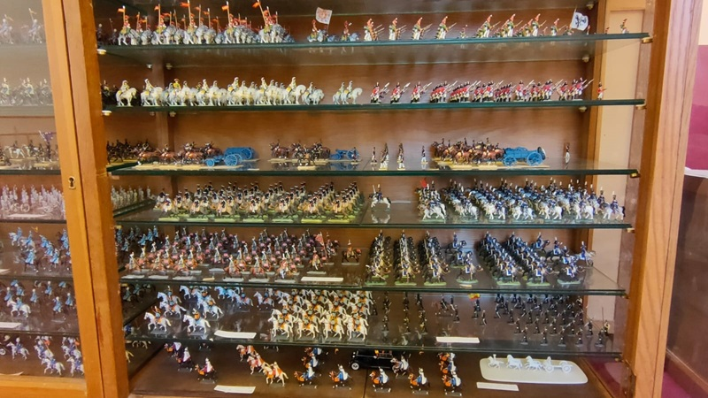
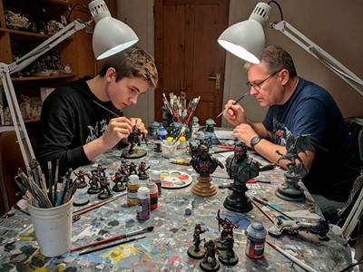
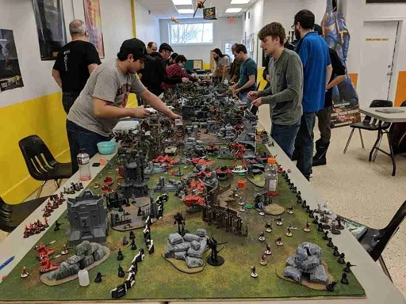

Coleccionar: La Creación del Ejército
El coleccionismo en este pasatiempo es estratégico. Los aficionados planifican sus compras basándose en un sistema de puntos que equilibra las partidas. Cada facción elegida posee un trasfondo narrativo profundo (lore) y una estética visual única. Para los principiantes, las cajas de inicio de dos facciones suelen ser la opción con mejor relación valor-precio.

Pintar: El Arte en Miniatura
Esta faceta requiere paciencia y motricidad fina. El proceso comienza con el despiece y pegado de las figuras que vienen en matrices plásticas. Luego se aplica una capa base de imprimación y se utilizan pinturas acrílicas especializadas al agua (como Vallejo o Citadel) que no tapan el detalle del esculpido. Técnicas como el pincel seco y los lavados de tinta permiten resaltar relieves y crear sombras fácilmente.

Jugar: La Estrategia en la Mesa
En 1913, el escritor H.G. Wells publicó el libro Little Wars (Pequeñas guerras), convirtiéndose en el padre de los juegos de guerra modernos al establecer las primeras reglas formales para jugar con soldados de juguete sin sistemas complejos.
Las batallas se despliegan sobre mesas que recrean campos de batalla con escenografía tridimensional (ruinas, bosques, colinas) que afecta la visibilidad y el movimiento. Las partidas se rigen por turnos donde se alternan fases de movimiento, disparo y combate cuerpo a cuerpo. El éxito de las acciones se determina mediante el uso de dados y las tarjetas de atributos de cada unidad.
